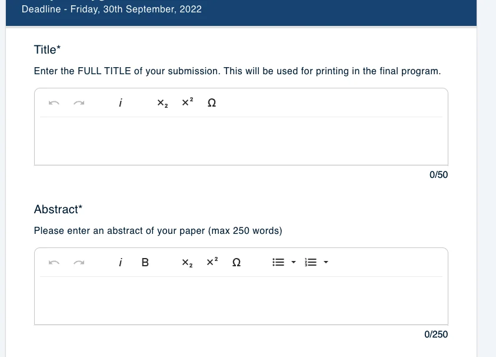
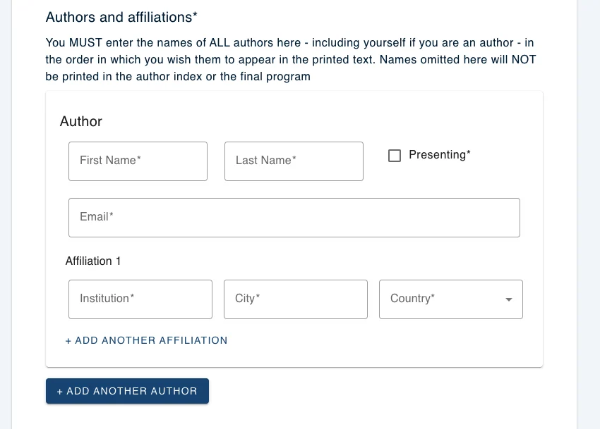
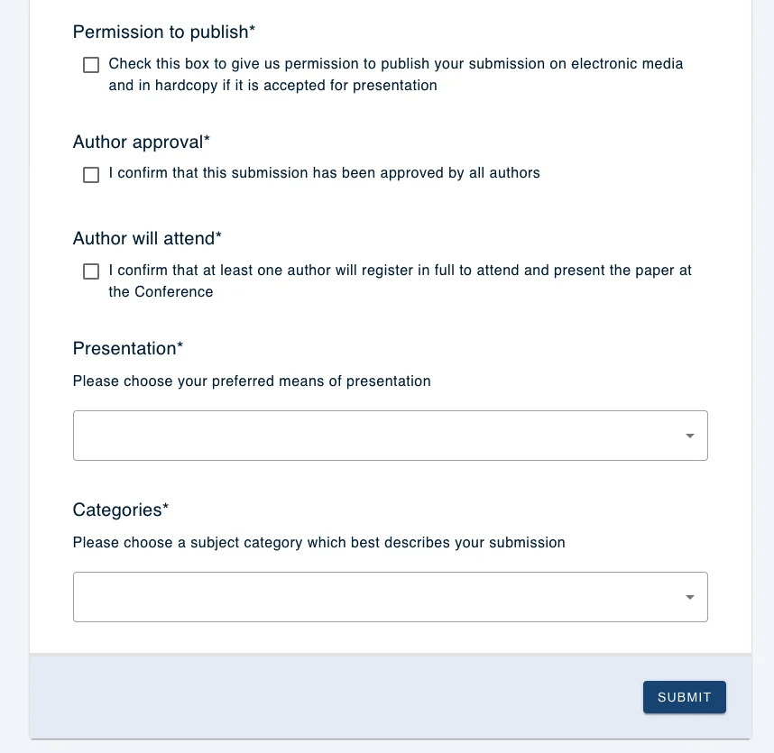

Making a submission
After clicking the link you have been supplied by your conference organiser - usually in an email or via the event website - you can begin to make a submission.#
NB: The guidance below is for users who are submitting a paper / abstract etc to a conference. If you are the administrator of an event please see The submission stage.
Before you can make a submission, you will be prompted to log in or set up an account with Oxford Abstracts.
Once registered, you can make your submission by completing the fields in the online submission form. Please note that mandatory fields are marked with an asterisk *

When completing the Abstract field, it is easiest to copy and paste straight from a Word document but in all fields that have a formatting toolbar, as above, you can format text, add tables and images as permitted within the toolbar's functions.
Hover over each toolbar icon with your mouse to view its function.
Once you have added your Title and Abstract, you will next need to add the Authors and affiliations of your abstractin the following boxes:

In the final section you will need to tick the boxes and make your selection from any drop down boxes the administrators have added to the submission page (please see example below).
Click Submitat the bottom right of the form when you have completed all relevant fields. You can also save your submission by pressing Submitand return to complete it later.

You will see a pop up alert if mandatory fields are left incomplete and your submission will be marked as 'incomplete' if these have not been answered, so ensure you return to complete these before the deadline.
NB: Please also note that if your word or character count is over the permitted limit, your abstract will also be marked as incomplete.
If the event admin has enabled the automatic emails, you will receive email notification that your submission has been received and informed whether it is complete or incomplete.
Click on the OA logo at the top left of your screen to return to your dashboard where you can view/edit your submissions or make a new submission.
Should you require any further assistance, please contact our support desk via our Contact Form.
Did this page solve it?
Thanks — this helps us fix it.